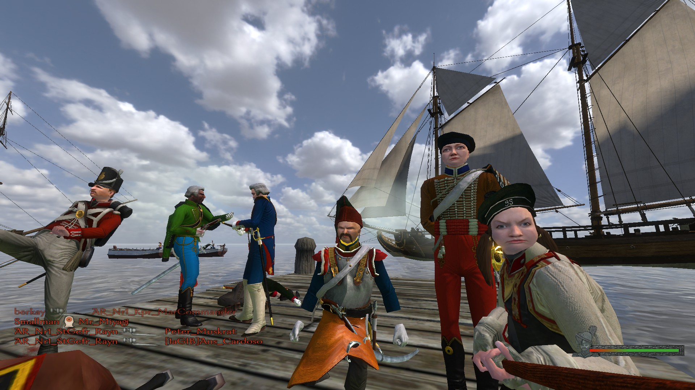

It's Almost Harvesting Season


Origen
Mount & Blade Warband cuenta con una infinidad de mods, entre los famosos estan:
Red Wars
https://www.moddb.com/mods/the-red-war-12
https://www.moddb.com/mods/bellum-imperii
https://www.moddb.com/mods/saxondragon
Si bien a inicios del 2020 ya salio su secuela: Mount & Blade Bannerlord, el juego a dia de hoy sigue tenien- do un famdom considerable. Esto se puede observar a que la comunidad de gamers (personas que juegan videojuegos) a dia de hoy continua estando muy activa, siendo evidencia los mods que han seguido saliendo, asi como el hecho que el juego ha sido considerado un mundo de inflexion en la industria de los videojuegos.
